![الجامعة العربية المفتوحة – Arab Open University]()
صعوبات التعلّم
من فهم المفهوم والخصائص والاحتياجات إلى توظيف التكنولوجيا والوسائل المساعدة في الميدان التربوي
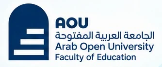
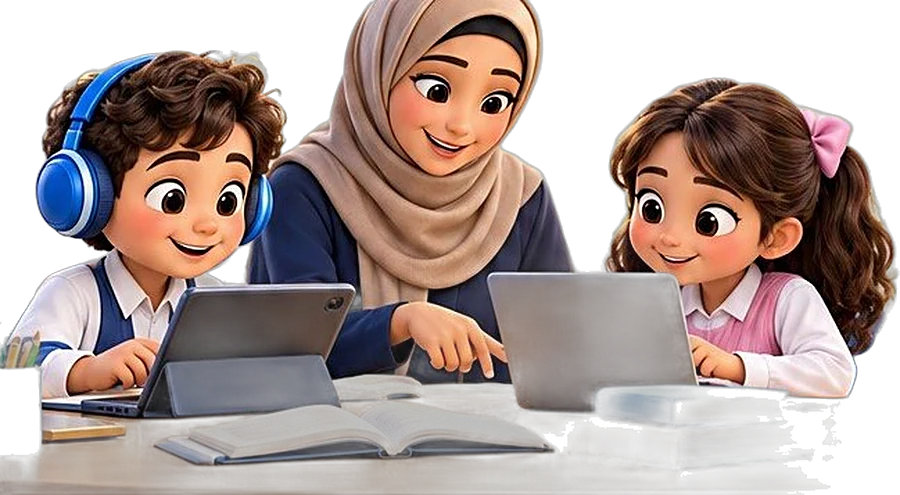
قبل أن نبدأ: صواب أم خطأ؟
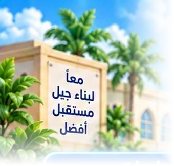
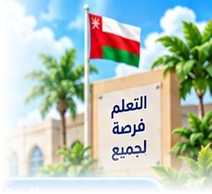
نسبة صعوبات التعلّم على مستوى العالم وسلطنة عُمان
تحليل مقارن للانتشار العالمي والتقديرات المحلية
من الأطفال في سن الدراسة
دراسات عُمانية محدودة تشير إلى تباين في التقديرات.
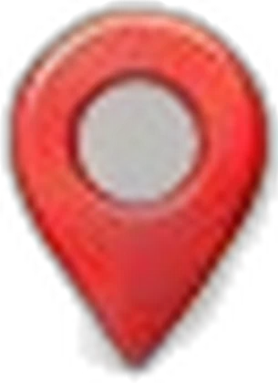
أطفال في دراسة بمحافظة مسقط
عينة صغيرة، 1999معدل انتشار الصعوبات النمائية
دراسة مسقط نفسها، كإحصائية منفصلة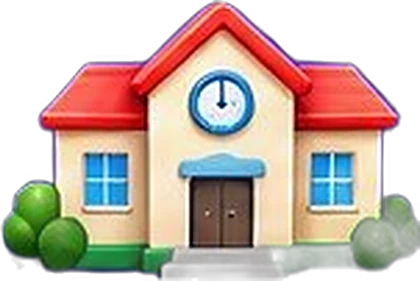
إحصائيات حديثة من وزارة التربية والتعليمطالبًا مسجلًا ضمن برنامج صعوبات التعلّم في المدارس الحكومية المطبقة للبرنامج
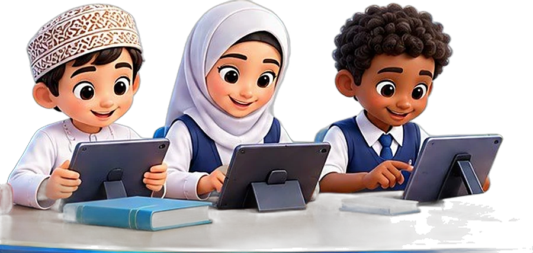
الأرقام والمصادر كما وردت في المحتوى المرفق.
تعريف صعوبات التعلّم
تُعرّف صعوبات التعلّم بأنها اضطرابات عصبية تؤثر على قدرة الطالب في اكتساب واستخدام مهارات أساسية مثل القراءة والكتابة والحساب أو التنظيم.
لا ترتبط بمستوى الذكاء، بل بصعوبات في معالجة المعلومات.
(NCLD, 2020)تحديات تؤثر على العمليات المعرفية المتعلقة بالتعلّم، مثل القراءة والكتابة والرياضيات والتنظيم والانتباه.
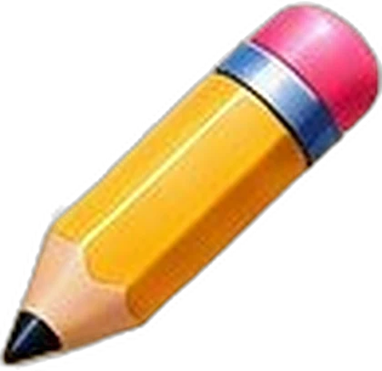
الكتابة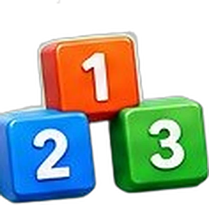
الرياضياتمن «عمى الكلمات» إلى التعليم الدامج
كيف تطوّرت تقنيات دعم ذوي صعوبات التعلّم؟
رحلة من التأسيس المفاهيمي إلى التعلّم التكيفي الذكي
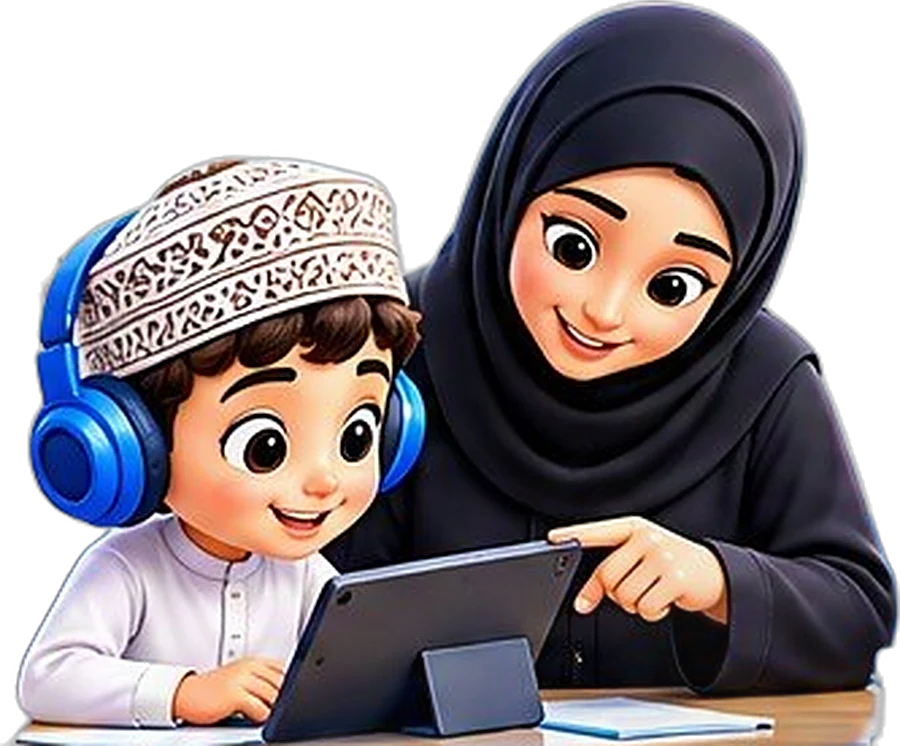
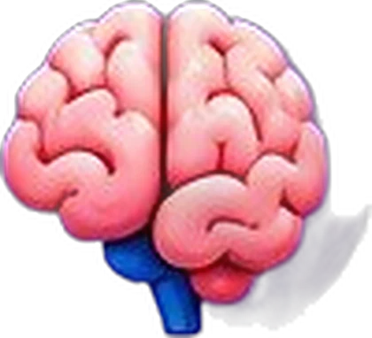
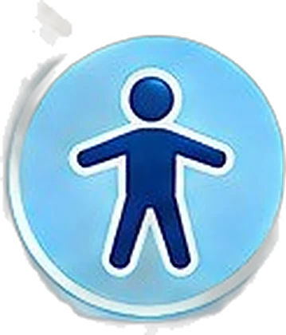
التأسيس المفاهيمي
بداية البرامج المتخصصة
التقنيات التعويضية
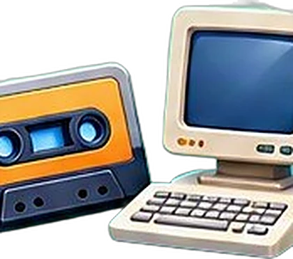
التسجيلات الصوتية والبرمجيات الخطية
الوسائط والتصميم الشامل
تعدد قنوات العرض الرقمية
التعلّم التكيفي الذكي
تخصيص المحتوى وتغذية راجعة فورية
لماذا تحدث صعوبات التعلّم؟
لا يوجد سبب واحد. تشير الأدلة إلى أساس نمائي عصبي تتفاعل فيه الوراثة مع عوامل ما قبل الولادة وبعدها.
وراثية
تتجمّع في العائلات. خطرها لدى الأقارب من الدرجة الأولى أعلى بـ:
في القراءة
في الرياضيات (DSM‑5)
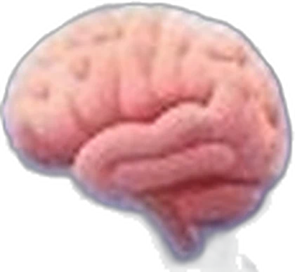
نمائية عصبية
فروق فردية في مناطق الدماغ المسؤولة عن معالجة اللغة. ينشأ عسر القراءة من قصور في المعالجة الصوتية، أي ربط أصوات الكلام بالحروف.
Mayo Clinic · StatPearls
قبل الولادة وأثناءها
- الولادة المبكرة
- انخفاض الوزن الشديد عند الولادة
- تعرّض الجنين للنيكوتين
- تعرّض الجنين للكحول
DSM‑5 · StatPearls
بعد الولادة
- إصابات الدماغ
- سوء التغذية
- التعرّض لمواد سامة كالمعادن الثقيلة
- الفقر عامل خطر مصاحب
StatPearls · Lumen Learning
كيف تظهر صعوبات التعلّم داخل الصف؟
- قدرات عقلية في المستوى الطبيعي أو أعلى، مع تحصيل أقل من المتوقع في مجال محدد.
- تفاوت واضح بين مهارة وأخرى: قد يتفوّق شفهيًا ويتعثّر كتابيًا.
- أداء غير ثابت من يوم لآخر في المهارة نفسها.
- تظهر غالبًا مع بدء التعلّم النظامي، وتستمر رغم التدخل العادي.
- ضعف الانتباه الانتقائي وسهولة التشتّت.
- قصور في الذاكرة العاملة قصيرة المدى.
- صعوبة في الإدراك السمعي والبصري للتمييز بين المتشابهات.
- بطء في سرعة معالجة المعلومات واسترجاعها.
- ضعف في المهارات ما وراء المعرفية: التخطيط ومراقبة الذات.
- قراءة بطيئة متقطّعة، وحذف وإبدال للحروف المتشابهة، وضعف فهم المقروء.
- إملاء ضعيف رغم الحفظ، وخلط بين الأصوات المتقاربة.
- تعبير كتابي ضعيف التنظيم، بأخطاء نحوية وإملائية.
- صعوبة في الحقائق الحسابية والقيمة المكانية والاستدلال الرياضي.
حروف تختلف بالنقاط فقط، ويتغير شكل الحرف حسب موقعه، ويغيب التشكيل غالبًا. كلها أعباء إضافية على القارئ المتعثّر.
- ضعف المهارات الحركية الدقيقة: إمساك القلم وضبط حجم الحروف.
- بطء ملحوظ في الكتابة اليدوية وإرهاق سريع.
- صعوبة في التآزر البصري الحركي والنسخ من السبورة.
- قد يظهر ضعف في التنظيم المكاني على الصفحة.
- انخفاض تقدير الذات والشعور المتكرر بالفشل.
- قلق من القراءة الجهرية والاختبارات المحددة بوقت.
- تجنّب المهام، وقد يظهر سلوك تهريجي لإخفاء الصعوبة.
- صعوبة أحيانًا في قراءة الإشارات الاجتماعية غير اللفظية.
- نقاط القوة: تفكير بصري ومكاني، إبداع وحلول غير تقليدية، مهارات شفهية جيدة، مثابرة عند توفر الدعم.
- التحديات: الاكتشاف المتأخر، الوصمة، تراكم الفجوة الأكاديمية، ضعف الدافعية مع تكرار الإخفاق.
ثلاثة أنواع رئيسية… ومؤشرات يلاحظها المعلم
عسر القراءة
Dyslexia · impairment in readingصعوبة في دقة قراءة الكلمات أو طلاقتها أو فهم المقروء، تنشأ عن قصور في المعالجة الصوتية.
مؤشرات في الصف- قراءة بطيئة متقطعة ومجهدة
- إبدال الحروف المتشابهة نقطيًا
- تخمين الكلمة من حرفها الأول
- فهم جيد عند الاستماع وضعيف عند القراءة
- تجنّب القراءة الجهرية
عسر الكتابة والتعبير
Dysgraphia · written expressionصعوبة في التهجئة أو الخط أو تنظيم الأفكار كتابيًا، مع أخطاء نحوية وإملائية وضعف تنظيم الفقرات.
مؤشرات في الصف- خط غير مقروء وتباعد غير منتظم
- أخطاء إملائية في كلمات مألوفة
- إجابات شفهية أغنى بكثير من المكتوبة
- بطء شديد في النسخ والإملاء
- جمل قصيرة بلا ترابط
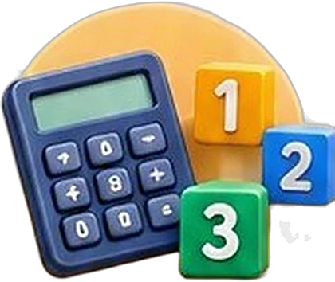
عسر الحساب
Dyscalculia · impairment in mathematicsصعوبة في الحس العددي، أو حفظ الحقائق الحسابية، أو دقة الحساب وطلاقته، أو الاستدلال الرياضي.
مؤشرات في الصف- العدّ على الأصابع في عمليات بسيطة
- خلط الرموز وترتيب الأرقام
- أخطاء في القيمة المكانية ومحاذاة الأعمدة
- صعوبة في المسائل اللفظية
- نسيان خطوات الإجراء الحسابي
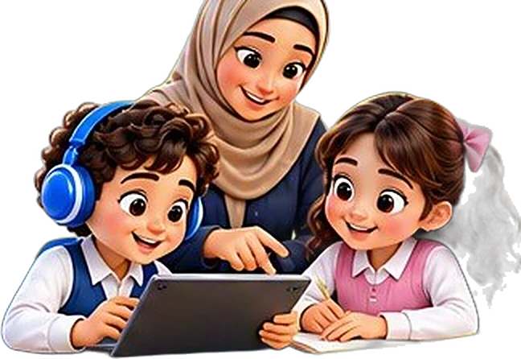
نماذج ملهمة من ذوي صعوبات التعلّم
تجارب مع عسر القراءة في مجالات الإبداع والعمل.
نموذج عربي: محمد باحارث
كاتب ومتحدث من جدة؛ شارك تجربته مع عسر القراءة وأسهم في التوعية ودعم المتعلمين.
ريتشارد برانسون
رائد أعمال ومؤسس فيرجن؛ بنى مسيرته على الإبداع والعمل الجماعي رغم عسر القراءة.
ستيفن سبيلبرغ
مخرج ومنتج؛ شُخّص بعسر القراءة متأخرًا؛ برز في التخيل والسرد البصري.
توم كروز
ممثل ومنتج؛ واجه عسر القراءة منذ الطفولة وتأثر في تعلم النصوص وبناء مسيرته الفنية.
كيرا نايتلي
ممثلة؛ ساعدها شغف التمثيل وقراءة النصوص الدرامية على تطوير مهاراتها القرائية.
هنري وينكلر
ممثل ومؤلف؛ وظّف تجربته مع عسر القراءة في كتب أطفال تبرز قدرات المتعلم وإبداعه.
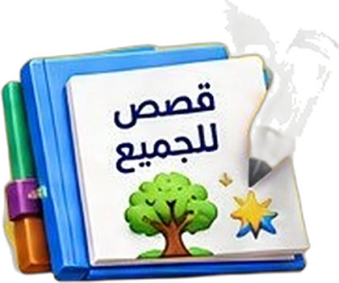
أندرسون كوبر
إعلامي وصحفي؛ تحدث عن صعوبات القراءة في طفولته وأهمية الدعم المتخصص.
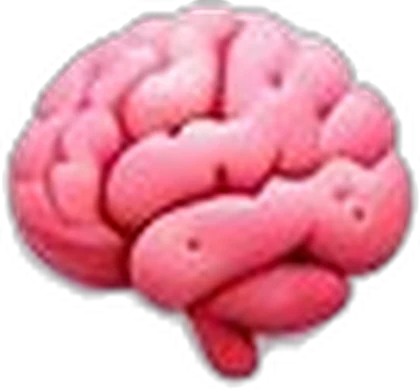
صعوبة التعلّم لا تعني تدني الذكاء.في السياق العربي: مشاركة التجارب تعزز الوعي وتشجع طلب الدعم مبكرًا.
التكنولوجيا المساعدة لدعم ذوي صعوبات التعلّم
تصنيفات فئات صعوبات التعلّم · تحديات تؤثر على العمليات المعرفية المتعلقة بالتعلّم
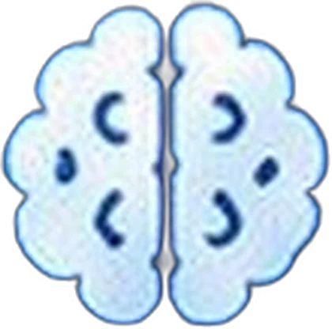
صعوبات التعلّم المحددةعسر القراءة
صعوبة في القراءة والتهجئة، وتأثير على الوعي الصوتي والذاكرة اللفظية.
عسر الحساب
صعوبة في فهم المفاهيم الرياضية والحقائق الحسابية.
عسر الكتابة
صعوبة في كتابة الحروف والأرقام بوضوح وتنظيم الأفكار كتابيًا.
كل عقل يتعلّم بطريقة مميزة
نقص الانتباه وفرط النشاط
صعوبة في التركيز والتحكم بالسلوك، وهو تشخيص مستقل.
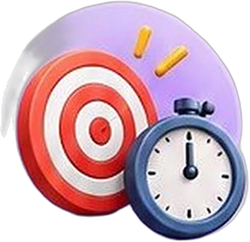
التناسق الحركي النمائي
صعوبة في تخطيط الحركات وتنفيذها.
الخلل في الأداء التنفيذي
مشاكل في التنظيم، وتذكّر التفاصيل، وإدارة الوقت.
تصنيفات فئات صعوبات التعلّم
تنقسم صعوبات التعلّم إلى مجموعتين أساسيتين: الصعوبات الأكاديمية والنمائية
المهارات الأكاديمية
مهارات القراءة، والحساب، والكتابة، والتهجئة.
عسر القراءة والحساب
الديسلكسيا للقراءة، والديسكالكوليا للرياضيات.
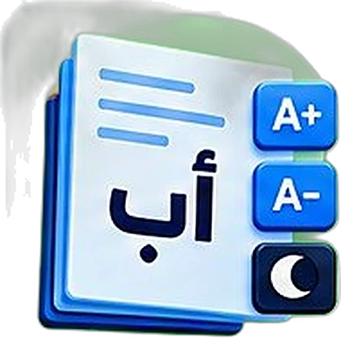
عسر الكتابة والتهجئة
الديسغرافيا للكتابة، وصعوبة التهجئة.
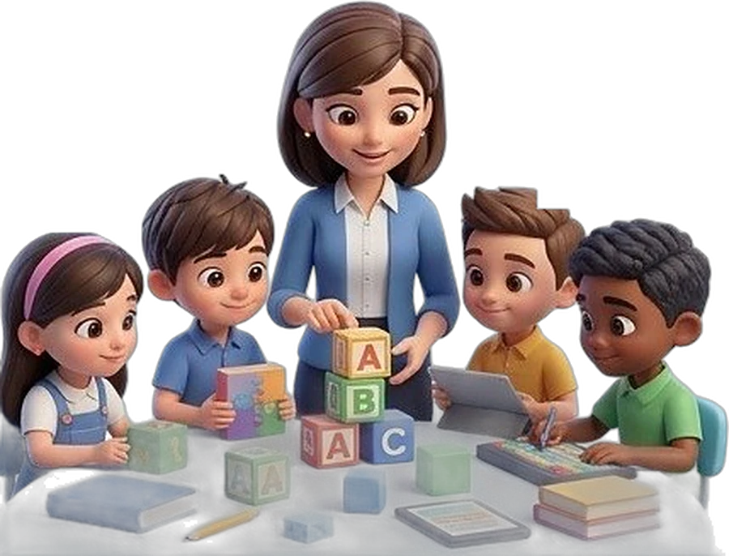
فهم التصنيفات يفتح أبواب الدعم الفعّال لكل متعلّم
وظائف دماغية وعقلية
تنقسم إلى أولية وثانوية، وتسبق الصعوبات الأكاديمية وتؤثّر فيها.
النمائية الأولية
الانتباه، والإدراك، والذاكرة كعمليات أساسية.
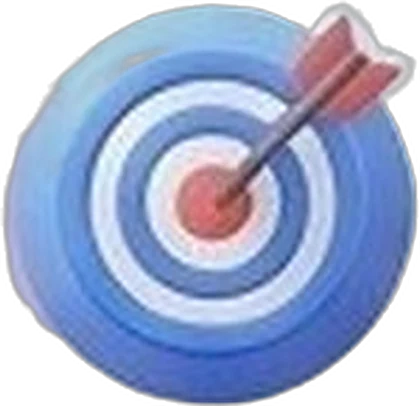
النمائية الثانوية
التفكير، واللغة الشفهية، وفهم التعليمات.
عِش التجربة
أربع مهام قصيرة تضعكم لدقائق مكان طالب لديه صعوبة في التعلّم. لاحظوا مشاعركم أثناء المحاولة، فسنعود إليها في النهاية.
القاعدة الوحيدة: حاولوا بجد، كما يُطلب من الطالب كل يوم.
كيف يرى بعض الطلبة الصفحة؟
لديكم 25 ثانية لقراءة فقرة واحدة، ثم الإجابة عن سؤال
بحسب النص، ما الذي يحتاج إليه دماغ الطفل؟
اكتب… لكن يدك لا تطيعك
حين تفقد الرموز معناها المألوف
ركّز… وسط الضجيج
عاد عمر من المدرسة مع عمّه عصرًا، وعلى الطاولة عصير عنب وعلبة عسل، وعشرة عصافير مرسومة على غلاف كتاب العلوم.
20 ثانية لعدّ حرف «ع» في جملة واحدة. شغّلوا الضوضاء لتكتمل التجربة.
إجابتكم:
ما الشعور الذي رافقكم أثناء المهام؟
ماذا يحتاج الطالب ليتعلّم؟
تكييف البيئة
- مقعد قريب من المعلم بعيد عن المشتتات
- تعليمات مكتوبة ومرئية مع الشفهية
- روتين صفي واضح ومتوقع
- ركن هادئ للعمل الفردي
استراتيجيات التدريس
- التعليم متعدد الحواس
- تجزئة المهام إلى خطوات
- التعليم المباشر والنمذجة
- التعلّم بالأقران
- التغذية الراجعة الفورية
المواد والوسائل
- نصوص مسموعة ومشكولة
- أوراق عمل بخط واضح ومسافات أوسع
- منظمات رسومية
- محسوسات للرياضيات
الدعم الفردي والتقييم
- خطة تربوية فردية IEP بأهداف قابلة للقياس
- غرفة المصادر
- وقت إضافي وقراءة الأسئلة له
- متابعة تقدّم دورية
الدعم النفسي
- تعزيز الثقة بالنفس
- الاحتفاء بالتقدّم مهما صغر
- تجنّب القراءة الجهرية القسرية
- تعليمه الدفاع عن احتياجاته
نموذج الاستجابة للتدخّل: لا ننتظر الفشل
استراتيجيات تدريس قائمة على الأدلة
التعليم متعدد الحواس
يقرن الصوت بالشكل والحركة واللمس عند تعليم الحرف، كما في منهج أورتون‑جلنغهام.
مثال: يرسم الطالب الحرف على الرمل وهو ينطق صوته.
التعليم الصريح المباشر
شرح واضح، ثم نمذجة، ثم ممارسة موجّهة، ثم ممارسة مستقلة، مع تغذية راجعة فورية.
مثال: «أنا أفعل، نحن نفعل، أنت تفعل».
تدريب الوعي الصوتي
تقطيع الكلمة إلى أصوات ودمجها وحذفها، أساس علاج عسر القراءة لأنه يعالج قصور المعالجة الصوتية.
مثال: ما الكلمة إذا حذفنا /م/ من «مَلِك»؟
المحسوس ← المصوَّر ← المجرّد
تُعلَّم المفاهيم الرياضية بالأشياء أولًا، ثم بالرسوم، ثم بالرموز.
مثال: الكسور بقطع ملموسة، ثم دوائر مرسومة، ثم أرقام.
تعليم استراتيجيات الكتابة ES 0.82
تعليم الطالب خطوات التخطيط والكتابة والمراجعة بشكل صريح. أعلى أثر في تحليل 123 دراسة لتعليم الكتابة.
Graham & Perin, 2007 · ومعالجة النصوص ES 0.55
التصميم الشامل للتعلّم UDL
تنويع طرق عرض المحتوى، وطرق تعبير الطالب، ووسائل إثارة دافعيته منذ تخطيط الدرس.
مثال: النص مكتوبًا ومسموعًا، والإجابة كتابة أو تسجيلًا.
أهمية تكنولوجيا التدريس لصعوبات التعلّم
توظيف تربوي هادف يخفف عوائق التعلّم ويتيح فرصًا أكثر للمشاركة والنجاح.
تقديم المعلومات بصيغ نصية وصوتية وبصرية وفق احتياجات المتعلم.
تنويع الأنشطة ومستوى الدعم وسرعة التعلّم بما يلائم أداء كل طالب.
أنشطة تفاعلية هادفة تشجع المحاولة وتزيد فرص المشاركة الصفية.
إتاحة تدريب منظم في القراءة والكتابة والرياضيات مع تغذية راجعة مناسبة.
أدوات تساعد على تنظيم المهام وإنجازها تدريجيًا بدعم أقل.
الاستفادة من بيانات الأداء لتعديل التدخلات وأهداف الخطة الفردية.
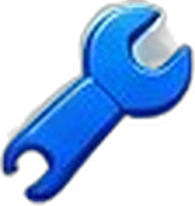
أداة ملائمة ومتاحةتتحقق القيمة التعليمية عندما ترتبط التقنية باحتياجات المتعلم؛ فهي داعم للتدريس وليست بديلًا عن المعلم.
أدوات التكنولوجيا المساعدة وتطبيقاتها التعليمية
خيارات مقترحة تُختار وفق احتياجات المتعلم وأهداف خطته الفردية
الاستماع إلى النص مع تتبع الكلمات لدعم الوصول إلى المحتوى.
إملاء الأفكار صوتيًا لتقليل عبء الكتابة، ثم مراجعتها وتحريرها.
ضبط حجم الخط والتباعد والتباين، وتقسيم النص إلى مقاطع واضحة.
استخدام التنبؤ بالكلمات والتدقيق الإملائي مع توجيه تعليمي مناسب.
تجزئة المهمات، وتقديم قوائم تحقق وتذكيرات بصرية تدعم الاستقلالية.
استخدام تمثيلات بصرية ومحسوسات رقمية لتوضيح المفاهيم والخطوات.
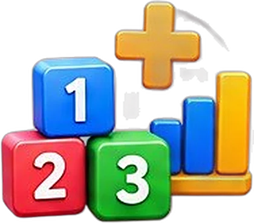
تُجرَّب الأداة، ويُقاس أثرها، ثم تُعدَّل وفق استجابة المتعلم.
خيارات تعليمية مقترحة؛ لا تمثل حصرًا للأدوات المستخدمة ميدانيًا.
صندوق أدوات المعلّم
إطار SETT: الأداة تأتي أخيرًا
الطالبStudent
- ما نقاط قوته واهتماماته؟
- ما الذي يعجز عنه الآن؟
- ما الأدوات التي جرّبها سابقًا؟
سارة، الصف الرابع، عسر قراءة. فهمها الشفهي ممتاز، وقراءتها بطيئة ومجهدة، وتحب الرسم.
البيئةEnvironments
- أين يتعلّم؟ صف دامج، غرفة مصادر، البيت
- ما الدعم والأجهزة المتاحة؟
- ما العوائق المادية والتعليمية؟
صف دامج من 28 طالبًا، جهاز لوحي متاح، معلمة مصادر حصتين أسبوعيًا، والأسرة متعاونة.
المهامTasks
- ما المهام المطلوبة منه ليشارك بفاعلية؟
- ما شكل النجاح في كل مهمة؟
قراءة نصوص العلوم والإجابة عن أسئلتها، والمشاركة في نقاش المجموعة.
الأدواتTools
- ما الأجهزة والبرامج والخدمات المناسبة؟
- من يدرّب الطالب والمعلم والأسرة؟
- كيف نقيس فاعليتها؟
تحويل النص إلى كلام بنصوص مشكولة، مسطرة قراءة، منظم رسومي للإجابة، وتقييم بعد 6 أسابيع.
Zabala, J. — SETT Framework
خطوات توظيف التكنولوجيا المساعدة
من تحديد الاحتياج إلى تقويم الأثر وتحسين الدعم.
رصد نقاط القوة وعوائق التعلّم، وتحديد مستوى الأداء الحالي.
ربط استخدام التقنية بهدف محدد في الخطة التربوية الفردية.
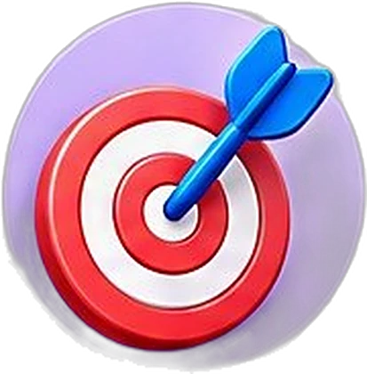
مراعاة دعم العربية، وسهولة الاستخدام، والإتاحة، والخصوصية.
تجريب الأداة مع المتعلم وتدريب المعلم والأسرة على استخدامها.
توظيف الأداة في المهام الصفية مع تقديم الدعم وخفضه تدريجيًا.
مقارنة الأداء بالهدف، ثم تعديل الأداة أو مستوى الدعم وفق النتائج.
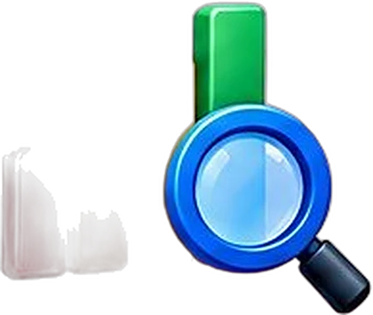
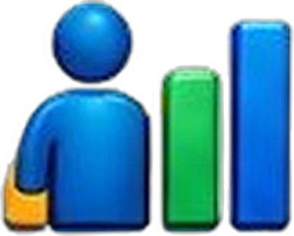
درجة الاستقلاليةنجاح التوظيف يُقاس بتحسّن تعلّم الطالب، لا بمجرد استخدام الجهاز.
إطار إجرائي مقترح
حين تتدخّل التكنولوجيا
القراءة الصوتية تستخدم صوت المتصفح؛ إن لم يتوفر صوت عربي يُستخدم الصوت الافتراضي.
ثلاثة فيديوهات تكمل الصورة
عسر القراءة والكتابة
تقرير من أبوظبي يعرّف عسر القراءة بوصفه من أكثر صعوبات التعلّم شيوعًا، ويربطه بطريقة معالجة اللغة.
سؤال للنقاش: ما العلامات المبكرة التي يمكن للمعلّم ملاحظتها؟شاهد الفيديوما هو عسر القراءة؟
درس قصير لكيلي ساندمان‑هيرلي يشرح ما يحدث في الدماغ عند القراءة، ويدعو إلى تقدير التنوّع العصبي.
فعّلوا الترجمة من إعدادات يوتيوب.شاهد على يوتيوبHow Difficult Can This Be? F.A.T. City
ورشة يعيش فيها معلمون وأهالٍ محاكاة يومية لطالب ذي صعوبة تعلّم، وهي أصل فكرة مهامنا التفاعلية.
بالإنجليزية · اعرضوا مقطعًا قصيرًا منها.شاهد على Vimeoماذا تقول الدراسات الدولية؟
تحليل بعدي لـ 22 دراسة: أدوات القراءة الجهرية وتحويل النص إلى كلام أثّرت إيجابًا في الاستيعاب القرائي لدى ذوي صعوبات القراءة. ويحتاج أثر العوامل المعدِّلة إلى مزيد من البحث.
Wood, Moxley, Tighe & Wagner (2018) · J. of Learning Disabilities, 51(1)
مراجعة منهجية لمن هم في سن 14 فأكثر: 38 دراسة تدخل كمية و5 مسحية و13 نوعية. مشاعر الطلبة مختلطة بسبب الأعطال التقنية والشعور بالوصمة عند الاستخدام.
Perelmutter, McGregor & Gordon (2017) · Computers & Education, 114
تحليل بعدي للصفوف 1–12 يدعم استخدام معالجات النصوص مع الكاتبين والقارئين الأضعف. فضّلها الطلبة على الكتابة اليدوية (d = 0.64)، وكان أثرها أقوى حين قدّمت تغذية راجعة أو حفّزت التخطيط والمراجعة (d = 1.46، ثلاث دراسات).
Morphy & Graham (2012) · Reading and Writing, 25(3)
تحليل 123 دراسة للصفوف 4–12: تعليم الاستراتيجيات (0.82)، والتلخيص (0.82)، ومساعدة الأقران (0.75)، ومعالجة النصوص (0.55). أما تدريس القواعد النحوية منفردًا فأثره سلبي (−0.32).
Graham & Perin (2007) · Journal of Educational Psychology
ماذا تقول الدراسات في منطقتنا؟
معلمات مدارس الدمج والتقنيات المساعدة
38 معلمة من الحلقة الأولى في مدرستي دمج حكوميتين بالفجيرة وعجمان (2016/2017).
- ضعف استخدام الأجهزة الحديثة كأجهزة النطق.
- أبرز المعوقات: قلة التقنيات، غرف مصادر غير مجهّزة، غياب فني الصيانة، قلة الدورات.
- توصية: اختيار التقنية حسب نوع الصعوبة ودرجتها والاحتياج الفردي، وتوفيرها في مراكز مصادر التعلّم.
معلمو ذوي صعوبات التعلّم والتعليم الإلكتروني
230 معلمًا ومعلمة، استبانة من 30 عبارة. الاستخدام قليل، والمتطلبات متوافرة بدرجة متوسطة، والمعوقات كبيرة.
الاحتياجات التربوية في مدارس القدس
من وجهة نظر المعلمين: إدخال التكنولوجيا التعليمية، وتفعيل برامج الدمج التربوي والاجتماعي، وأساليب حديثة تلائم الفروق الفردية.
إجماع الطلبة ذوي الإعاقة على أن توفير التكنولوجيا المساعدة يدعم تعلّمهم واتجاهًا إيجابيًا نحو الدمج، مع استمرار تحديات في الخدمات.
ماذا تعلّمنا من الدراسات؟
الدروس المستفادة
- التقنية فعّالة حين تُختار حسب نوع الصعوبة ودرجتها واحتياج الطالب.
- توفير الأجهزة وحده لا يكفي دون تدريب مستمر ودعم فني.
- رأي الطالب مهم: الوصمة والأعطال قد تجعله يرفض الأداة.
- التقنية تكمّل تعليم المهارة ولا تستبدله.
- الأدوات التي تحفّز التخطيط والمراجعة أقوى أثرًا من مجرد الكتابة على الحاسوب.
فجوات البحث المستقبلية
- قلة الدراسات التجريبية على أدوات القراءة باللغة العربية.
- أثر التشكيل وجودة الأصوات العربية في أدوات تحويل النص إلى كلام.
- الدراسات العربية مسحية غالبًا وتعتمد على آراء المعلمين، ونادرًا ما تقيس التحصيل.
- ندرة الدراسات التي تستمع إلى الطلبة أنفسهم.
- دور الذكاء الاصطناعي في الكشف المبكر بالعربية.
مراجعة أدبية نقدية لدراسات حديثة ومقارنتها بالواقع المحلي
مدرسة كنوز المعرفة للتعليم الأساسي (1–4)
وسائل متعددة للتمثيل والمشاركة والتعبير؛ لدعم الوصول إلى المحتوى ومشاركة المتعلمين.
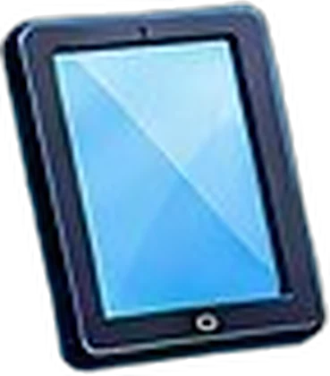
الاستخدام التقني والأدواتخلاصة نقدية وخارطة طريق
المراجعة الأدبية النقدية · مدرسة كنوز المعرفة للتعليم الأساسي (1–4)
أساس تنظيمي جيد للدمج وتوجّه إيجابي للتعلّم الرقمي؛ والفجوة في الانتقال من الاستخدام العرضي إلى توظيف استراتيجي قائم على الأدلة، يراعي العربية والسياق المحلي.
خارطة الطريق للدمج الرقمي في سلطنة عُمان
تحديث أدلة غرف المصادر وربط التقنية بأهداف IEP.
برامج مهنية للمعلمين وفق نموذج TPACK.
شراكات لتطوير تطبيقات عربية ذكية للقراءة والحساب.
ملخص الدراسات والمقارنة كما وردت في المحتوى المقدم.
الزيارة الميدانية
مدرسة كنوز المعرفة للتعليم الأساسي (1–4) · محافظة مسقط — سلطنة عُمان
محاور الزيارة الميدانية: واقع تعليم الطلبة ذوي صعوبات التعلّم وتوظيف التكنولوجيا المساعدة
رصد الصعوبات التي تواجه الطلبة في البيئة التعليمية.
تحليل انعكاس التحديات على تعلّم الطلبة وتفاعلهم.
تحديد جوانب الدعم التي توفرها الأدوات المستخدمة.
رصد جوانب القصور والفجوات في توظيف الأدوات.
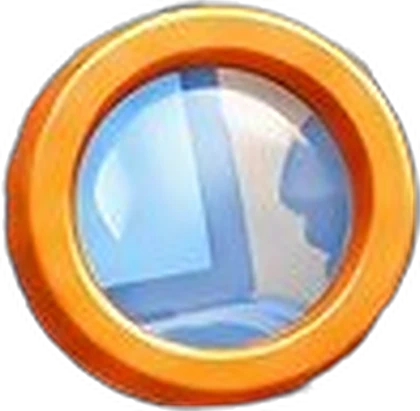
تحليل التكنولوجيا المساعدة
مقارنة الأدوات المستخدمة بأفضل الممارسات العالمية.
من الميدان: زيارتنا الميدانية
- [ملاحظة ١]
- [ملاحظة ٢]
- [ملاحظة ٣]
الزيارة الميدانية: التحديات وتحليل التكنولوجيا
مدرسة كنوز المعرفة للتعليم الأساسي (1–4) · محافظة مسقط — سلطنة عُمان
- ضعف نقل المهارات من غرفة المصادر إلى الفصل العادي.
- نقص الأدوات الرقمية والتكيفية الداعمة للعربية.
- قصور التدريب الرقمي والتخصصي للمعلمين.
- ضعف الدعم القيادي والمرونة وتوجيه الموارد.
- الخلط بين صعوبات التعلّم والكسل أو الضعف العقلي.
- خطط فردية لا تستند إلى بيانات أداء رقمية.
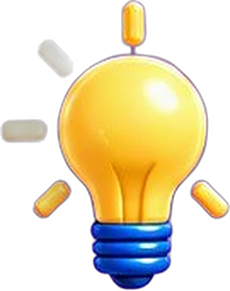
- تراكم الفجوات التعليمية وصعوبة استيعاب المواد.
- انخفاض مفهوم الذات والشعور بالإحباط.
- تراجع المشاركة الصفية.
- تجنّب الأقران خوفًا من الخطأ أو السخرية.
- ضعف الاندماج الاجتماعي داخل المدرسة.
- زيادة الوصول إلى المحتوى التعليمي.
- دعم الاستقلالية والتعلّم الذاتي.
- تحسين الدافعية والمشاركة الصفية.
- تعزيز انتباه الطلبة.
- تعلّم شخصي يراعي الفروق الفردية.
- تغذية راجعة فورية في التطبيقات القائمة على اللعب.
- تغليب الجانب التقني على الجانب التربوي.
- ضعف كفايات بعض المعلمين التقنية.
- قصور أدوات النطق والإملاء الداعمة للعربية.
- غياب خطط واضحة لقياس الأثر.
- حفظ وتكرار دون تحليل تشخيصي للأخطاء.
- أدوات عامة غير تكيفية.
- محدودية المحتوى العربي المتخصص.
- ارتفاع تكلفة بعض البرامج والأجهزة.
أين الفجوة بين المأمول والواقع؟
| المعيار | الواقع في الميدان (انقر للكتابة) | الحالة |
|---|
نسبة تحقّق المعايير
متحقق = نقطة كاملة · جزئي = نصف نقطة
مقارنة الأدوات المستخدمة مع أفضل الممارسات العالمية
الزيارة الميدانية — مدرسة كنوز المعرفة للتعليم الأساسي (1–4) · أبرز الفروق بين الواقع المحلي والممارسات العالمية
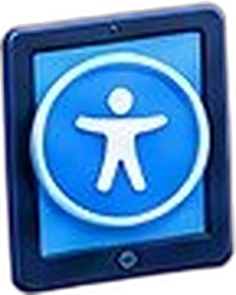
أدوات الوصول والبرامج التكيفية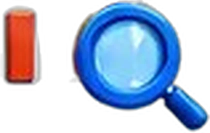
القرارات المبنية على البياناترغم جهود دعم الدمج، يتطلب التحول الرقمي الشامل الانتقال من التعليم العلاجي المنعزل إلى التصميم الشامل للتعلّم في المدرسة، ودمج تطبيقات عربية للذكاء الاصطناعي تدعم التشخيص والتدريب، وتمكين المعلمين مهنيًا لاستدامة الأثر التعليمي.
ماذا بقي في الذاكرة؟
إلى أين نمضي بعد ذلك؟
لتحسين الاستخدام
- برنامج تدريبي مستمر للمعلمين أثناء الخدمة.
- اعتماد إطار SETT لاختيار الأداة حسب الطالب والبيئة والمهمة.
- فني دعم وصيانة في غرف المصادر.
- إشراك الأسرة في استخدام الأدوات منزليًا.
- تضمين التقنية في أهداف الخطة الفردية.
بحوث ودراسات مستقبلية
- أثر القارئ الغامر بالعربية في استيعاب طلبة الحلقة الأولى (تصميم تجريبي).
- مقارنة تحويل النص إلى كلام مع التشكيل وبدونه.
- اتجاهات الطلبة نحو التقنيات المساعدة والشعور بالوصمة.
- الذكاء الاصطناعي في الكشف المبكر عن عسر القراءة بالعربية.
مجالات التطوير والابتكار
- محتوى رقمي عربي مشكول ومهيّأ لذوي صعوبات القراءة.
- تطبيق محلي لتدريب الوعي الصوتي بالعربية.
- بنك أدوات مفتوح تتشاركه مدارس الدمج.
شكرًا لكم
كل طالب يتعلّم، لكن ليس كل طالب يتعلّم بالطريقة نفسها. مهمتنا أن نجد الطريق المناسب له.
أسئلتكم ونقاشكم مرحّب بها
المراجع
وزارة التربية والتعليم، سلطنة عُمان: إحصائيات برنامج صعوبات التعلّم 2023/2024.
المقطري، ياسين (2017). واقع استخدام معلمات مدارس الدمج للتقنيات المساعدة… في الإمارات. مجلة العلوم التربوية.
واقع استخدام معلمي الطلبة ذوي صعوبات التعلّم لتكنولوجيا التعليم الإلكتروني بدولة الكويت. بنك المعرفة المصري.
أبو خضير، مها. الاحتياجات التربوية لطلبة صعوبات التعلّم من وجهة نظر معلميهم في مدارس القدس. الجامعة العربية الأمريكية.
American Psychiatric Association. (2013). DSM‑5: Specific Learning Disorder.
Wood, S. G., et al. (2018). Text-to-speech and read-aloud tools… A meta-analysis. J. of Learning Disabilities, 51(1), 73–84.
Perelmutter, B., McGregor, K. K., & Gordon, K. R. (2017). Computers & Education, 114, 139–163.
Morphy, P., & Graham, S. (2012). Word processing programs and weaker writers/readers. Reading and Writing, 25(3), 641–678.
Graham, S., & Perin, D. (2007). A meta-analysis of writing instruction for adolescent students. J. of Educational Psychology.
NCES (2024). Students With Disabilities. Condition of Education. · Pullen, P. C. (2016). LDCJ, 14(1).
Zabala, J. S. (2020). The SETT Framework. In Assistive Technology to Support Inclusive Education. Emerald.
StatPearls: Learning Disorder (NCBI Bookshelf) · Lavoie, R. D. How Difficult Can This Be? F.A.T. City [Video]. PBS.